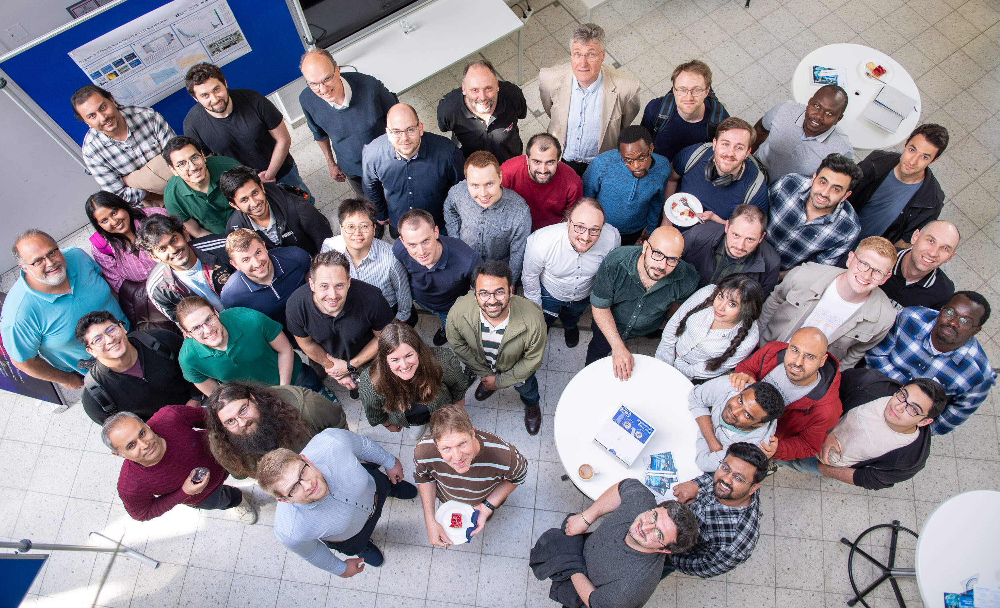

International study and research pathway
Your pathway to research-oriented Master’s study in AI and intelligent sensor systems
EXCELS prepares selected international Bachelor’s students for Master’s programmes in Computer Science and Electrical Engineering through Digital Prep, a research-oriented Summer School in Siegen, and early connections to researchers at ETI and ZESS.
Applications are not currently open.Eligibility requirements, dates, and application instructions will be published on this page.

Why EXCELS?
EXCELS prepares international bachelor’s students for research-oriented master’s studies at the University of Siegen. The project brings together Artificial Intelligence and intelligent sensor systems through academic preparation, research experience, and guidance before enrolment.
Is EXCELS for You?
EXCELS is aimed at outstanding bachelor’s students in their penultimate or final year who are interested in research-oriented master’s studies in Computer Science or Electrical Engineering.
The project focuses on students from Southeast Asia, China, India, Ghana, and Kenya.
How EXCELS Works
Digital Prep
Online modules in AI and sensor systems, academic orientation, and application guidance.
Summer School
Two weeks in Siegen with project work, laboratory visits, research demonstrations, and networking.
Application Support
Guidance during the transition to application and enrolment at the University of Siegen.
Master’s and Research
Research-oriented study in Computer Science or Electrical Engineering, with links to research groups.
Research at Siegen
EXCELS is based in the Department of Electrical Engineering and Computer Science and works closely with the Center for Sensor Systems (ZESS). Students gain insight into research connecting artificial intelligence with intelligent sensor systems.
Frequently Asked Questions
Who is EXCELS for?
EXCELS is aimed at outstanding bachelor’s students in their penultimate or final year who are interested in a research-oriented master’s degree in Computer Science or Electrical Engineering at the University of Siegen. The project focuses on students from Southeast Asia, China, India, Ghana, and Kenya.
What does Digital Prep include?
Digital Prep combines online modules in AI and sensor systems with guidance on German teaching, learning, and examination practices. It also includes information on applications and administrative procedures, as well as online exchange with teachers and researchers.
What happens during the Summer School?
The two-week Summer School in Siegen includes project-based teamwork, laboratory visits, research demonstrations, networking, and a cultural programme. It is planned for June or July in 2027, 2028, and 2029, with 15 students expected each year.
Is there a participation fee?
No participation fee is planned for the Digital Prep formats or the Summer School.
What support is available after the programme?
Selected students will receive support during the transition to application and enrolment. Planned support includes mentoring, links to research groups, academic workshops, and guidance on further study and career pathways in Germany.
Applications
Application dates, selection criteria, and the application process will be published here in due course.